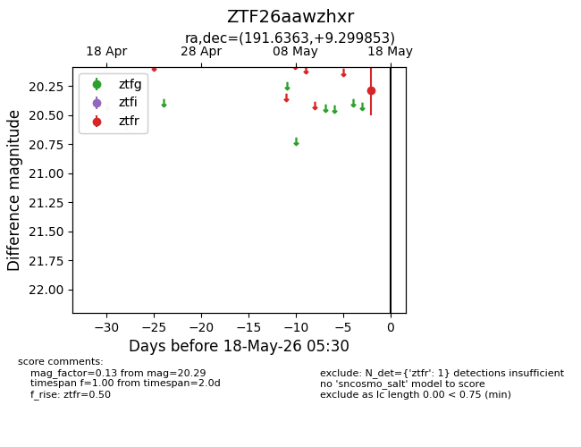
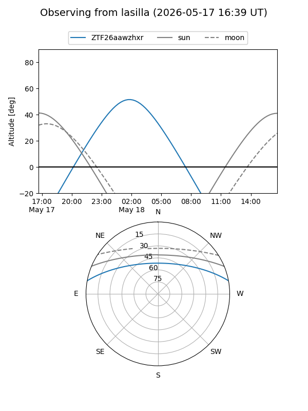
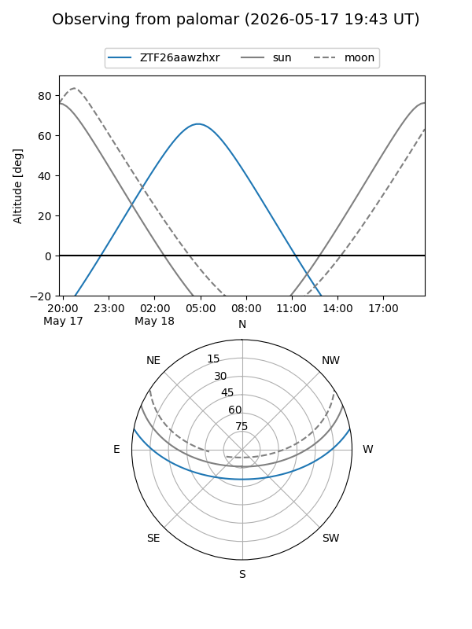

ZTF26aawzhxr
Target ZTF26aawzhxr at 2026-05-18 05:32
Aliases and brokers:
FINK: link
Lasair: link
ALeRCE: link
alt names
ZTF26aawzhxr (ztf,fink_ztf)
Coordinates:
equatorial (ra, dec) = 191.6363,+9.29985
equatorial (HMS+DMS) = 12:46:32.72,+09:17:59.47
galactic (l, b) = (298.9946,+72.13419)
Flags:
Photometry:
last ztfr=20.29
1 ztfr detections
Lightcurve

Visibility


Additional plots